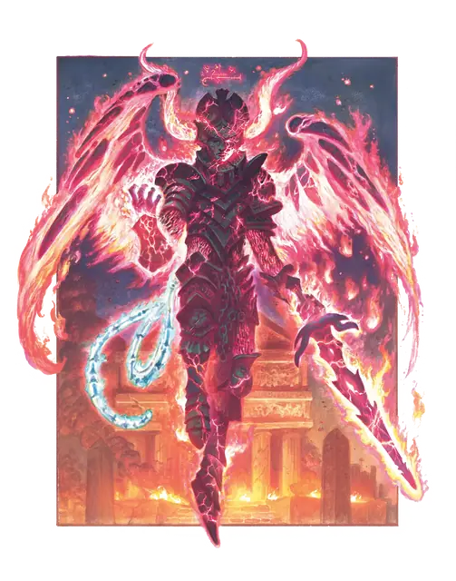

Эриния
Erinyes
Среднее Исчадие (Дьявол), Принципиальное Злое

Класс Защиты 18 Инициатива +7 (17)
Хиты 178 (21к8 + 84)
Скорость 30 футов, Полёта 60 футов
| мод | спас | ||
|---|---|---|---|
| СИЛ | 18 | +4 | +4 |
| ЛОВ | 16 | +3 | +7 |
| ТЕЛ | 18 | +4 | +8 |
| мод | спас | ||
|---|---|---|---|
| ИНТ | 14 | +2 | +2 |
| МДР | 14 | +2 | +2 |
| ХАР | 18 | +4 | +8 |
Сопротивление урону Холод
Иммунитеты Огонь, Яд; Отравленный
Чувства пассивное Восприятие 16, Истинное зрение 120 футов
Языки Инфернальный, Телепатия 120 фт.
Опасность 12 (8 400 опыта; БВ +4)
Особенности
Восстановление дьявола. Когда эриния умирает за пределами Девяти Преисподних, её тело превращается в сернистое облако и в тот же миг заново возрождается со всеми Хитами где-то в Девяти Преисподних.
Сопротивление магии. Эриния совершает с Преимуществом спасброски от заклинаний и прочих магических эффектов.
Магическая верёвка. У эринии есть магическая верёвка. Пока верёвка при ней, эриния может совершать действие Опутывающая верёвка. У верёвки КЗ 20; 90 Хитов и Иммунитет к Психическому урону и урону Ядом; она рассыпается в пыль, если её Хиты опускаются до 0, если находится более чем в 5 футах от эринии более одного часа или если та умирает. Если верёвка повреждена или уничтожена, эриния может полностью восстановить её Хиты по завершении Короткого или Долгого отдыха.
Действия
Мультиатака. Эриния совершает три атаки Иссушающим мечом и может использовать Опутывающую верёвку.
Иссушающий меч. Бросок рукопашной атаки: +8, досягаемость 5 фт. Попадание: 13 (2к8 + 4) Рубящего урона плюс 11 (2к10) Некротического урона.
Опутывающая верёвка (требуется Магическая верёвка). Спасбросок Силы: Сл 16, одно видимое эринией существо в 120 футах. Провал: 14 (4к6) Силового урона, и цель Опутана до тех пор, пока верёвка не будет уничтожена либо эриния не освободит цель Бонусным действием или не использует Опутывающую верёвку снова.
Реакции
Парирование. Условие: По эринии попали броском рукопашной атаки, пока та держит оружие. Эффект: Эриния получает бонус +4 к КЗ против этой атаки, что может привести к её промаху.
Бонус мастерства +4
Среда обитания Девять преисподних
Сокровища Оружейные
Эриния
Дьявол мести и праведного гнева
Эринии, которых также называют фуриями, — это крылатые дьяволы и дьяволицы, закованные в адские доспехи. Эти падшие ангелы вершат безжалостное божественное правосудие: охотятся на клятвопреступников и волокут законно осуждённых на проклятие в Девять Преисподних, опутав их своими магическими верёвками. Мало кто заглядывал под панцирь их брони, и эринии заботятся о том, чтобы те, кому это всё же удалось, никому уже не могли рассказать об увиденном.
Эринии часто служат архидьяволам и охраняют порядок Девяти Преисподних от незваных гостей и беглецов. Хотя они склонны к вспышкам гнева, с другими дьяволами эринии срабатываются отлично. Порой они охотятся тройками, создавая себе зловещую репутацию.
Когда эринии не служат дьявольскому господину, то выслеживают порочные души самостоятельно. Они преследуют добычу неумолимо — через всю мультивселенную и целые эпохи, если потребуется. Иногда их призывают на службу злые маги, но, кроме того, эринии чутко внимают клятвам и проклятиям, в которых их упоминают. В редких случаях несправедливо обиженных смертных, взывающих с праведным гневом, может услышать эриния, которая явится, чтобы свершить возмездие от их лица. Но уж если эринию призвали таким образом, она не уйдёт, не забрав душу — либо самой жертвы, либо того смертного, что её позвал.